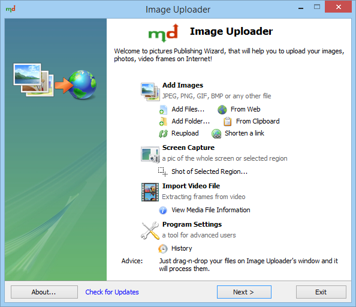

Программа предназначена для загрузки изображений в Интернет. Для хранения файлов программа использует несколько десятков общедоступных хостингов изображений и файлов. Среди них такие известные сайты, как Yandex.Fotki, Picasa, flickr.com, imgur.com, Yandex.Disk, Dropbox, и многие другие.

Вид главного окна программы
Функции программы:
- Несколько видов снимков экрана: всего экрана, активного окна, или области, выбранной с помощью мыши.
- Извлечение кадров из видео-файлов популярных форматов. Полученные кадры можно по отдельности загрузить на сервер, либо скомпоновать в одну картинку-мозаику.
- Преобразование изображений перед загрузкой и создание миниатюр
- Загрузка на популярные хостинги картинок и файлов, фотохостинги, а также заданный FTP сервер
- Генерация кода для показа изображений в блоге, форуме или на сайте.
Дополнительные возможности:
- Получение технических данных о мультимедийных файлах (видео, аудио) с использованием библиотеки MediaInfo
- Вставка изображений или ссылок из буфера обмена и drag-n-drop из других приложений.
- Скачивание изображений из Интернета
- Использование и управление альбомами на фотохостингах (Picasa, Yandex.Fotki)
- Поддержка прокси серверов
- Добавление собственного подменю в контекстное меню проводника Windows (правый клик мыши по файлу)
Системные требования
Поддерживаемые операционные системы: Microsoft Windows 2000*/XP/2003/Vista/7
* Для работы под Windows 2000 необходимо установить библиотеку GdiPlus.dll.